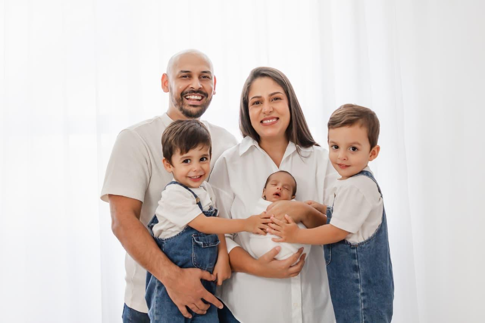
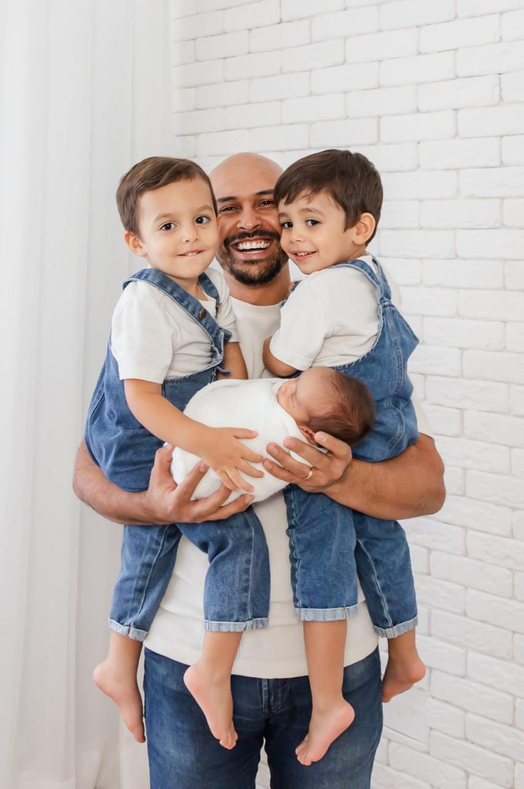

Entre o café
e a fralda,
tem graça.
Há 10 anos eu e a Gabi estamos construindo uma família: três filhos, muitas madrugadas e uma fé que a gente não negocia. Aqui eu divido o que vou aprendendo, de um jeito simples, para qualquer pessoa que quer um lar mais leve e mais firme.

“Filhos são herança do Senhor.”
Salmos 127:3Na nossa casa, tudo acontece à mesa.
O café da madrugada, a conversa difícil, a oração antes de dormir. Este espaço é essa mesa, aberta para você. Eu falo de Deus porque foi Ele quem mudou a minha casa, e você é livre para tirar as suas próprias conclusões.
Você não precisa ser cristão para puxar uma cadeira.

O que a gente aprendeu até aqui
Nada de fórmula. Só o que a vida em casa ensinou. Toque para abrir.
Filho aprende mais com o que vê do que com o que ouve.
O jeito como a gente trata quem está em casa ensina mais do que qualquer conversa.
“Que todas estas palavras que hoje lhe ordeno estejam em seu coração. Ensine-as com persistência a seus filhos. Converse sobre elas quando estiver sentado em casa, quando estiver andando pelo caminho, quando se deitar e quando se levantar.”Deuteronômio 6:6–7
Repare na ordem: primeiro no seu coração, depois nos seus filhos. Deus não começa pedindo que a gente ensine. Começa pedindo que a gente viva.
E a sala de aula não é um púlpito. É a casa, o caminho, a hora de deitar e a hora de levantar. A rotina comum é onde a fé passa de uma geração para a outra.
Seu filho não vai lembrar da maioria das coisas que você disse. Vai lembrar de como você tratava a mãe dele, de como reagia no trânsito e de como orava quando as coisas davam errado.
Escolha um momento da rotina, como o caminho da escola, o banho ou a hora de dormir, e fale de Deus ali, em uma frase simples.
Senhor, que a minha vida ensine antes das minhas palavras. Planta a tua Palavra primeiro em mim. Amém.
Pedir perdão não diminui ninguém.
Nem para o marido, nem para a esposa, nem para o filho de 3 anos.
“Sejam bondosos e compassivos uns para com os outros, perdoando-se mutuamente, assim como Deus os perdoou em Cristo.”Efésios 4:32
O versículo termina com o motivo: “assim como Deus os perdoou”. A gente perdoa porque foi perdoado primeiro. Ninguém dá o que nunca recebeu.
Em casa, o orgulho costuma se disfarçar de autoridade: “eu sou o pai, não preciso pedir desculpa”. Mas autoridade de verdade não tem medo de reconhecer um erro.
Quando um pai pede perdão, ele mostra ao filho como é o coração de Deus: alguém que não esconde o erro, mas também não deixa o erro ter a última palavra.
Existe alguém em casa a quem você deve um pedido de desculpa? Não espere a hora perfeita. Faça hoje, olhando nos olhos.
Pai, obrigado por me perdoar tantas vezes. Me dá humildade para pedir perdão e graça para perdoar. Amém.
Cuidar do casamento é cuidar dos filhos.
Um casal unido é o lugar mais seguro para uma criança crescer.
“Um homem sozinho pode ser vencido, mas dois conseguem defender-se. Um cordão de três dobras não se rompe com facilidade.”Eclesiastes 4:12
Filhos não precisam de pais perfeitos. Precisam de pais que estão do mesmo lado. Uma criança se sente segura quando percebe que o pai e a mãe se amam e se respeitam.
Com a chegada dos filhos, o casamento vai fácil para o fim da fila: primeiro as crianças, depois o trabalho, depois a casa. O casal fica com o que sobra, e o que sobra quase sempre é cansaço.
O cordão tem três dobras: marido, esposa e Deus. Cuidar dessa terceira dobra, orando juntos e lembrando por que começaram, é o que segura as outras duas nos dias difíceis.
Mande uma mensagem para quem está ao seu lado agradecendo uma coisa específica que essa pessoa fez esta semana.
Senhor, sê o centro do nosso casamento. Que nossos filhos cresçam vendo um amor que aponta para ti. Amém.
Ninguém dá conta sozinho. E nem precisa.
Deus, a família e os amigos existem para isso.
“Venham a mim, todos os que estão cansados e sobrecarregados, e eu lhes darei descanso.”Mateus 11:28
Jesus não disse “venham a mim os que estão dando conta”. O convite é para os cansados. Se você está exausto, está exatamente no público certo.
Criar filhos mostra nossos limites rápido: o sono, a paciência, o dinheiro, a fé. Limite não é fracasso. É um lembrete de que fomos feitos para depender.
E Deus também cuida de nós por meio de gente: a avó que fica com as crianças, o amigo que traz o almoço, a igreja que ora. Aceitar ajuda também é fé.
Peça ajuda a uma pessoa, em uma coisa concreta. Depois separe cinco minutos de silêncio para entregar a Deus o que está pesando.
Jesus, eu estou cansado. Venho do jeito que estou. Me dá o teu descanso e me ensina a não carregar tudo sozinho. Amém.
5 minutos para a sua casa
Um café, uma palavra e cinco minutos. Para ler antes que o bebê acorde ou que apareça a próxima tarefa.
Receba no e-mail e no WhatsApp
O devocional de 5 minutos, para ler antes de o dia começar. Sem spam, e você sai quando quiser.
Cadastro feito!
Para garantir os devocionais no WhatsApp, mande um “oi” e salve o número na sua agenda.
Confirmar no WhatsApp30 minutos para conversar
Aqui em casa, a mesa é onde a vida acontece: o café da madrugada, a bronca, a oração. É lá que eu quero sentar com você.
Eu vou até a sua mesa, pela tela ou pessoalmente, com um café e tempo de verdade. Para você se abrir, desabafar, sorrir ou receber uma palavra pensada para o seu momento.
- 30 minde conversa sem pressa
- Seg a sexdas 20h às 22h
- 3 jeitosWhatsApp, vídeo ou presencial
Entre com o Google para marcar o seu café
Assim você enxerga o seu horário e pode desmarcar sozinho se precisar. Só o seu nome e o seu e-mail ficam guardados no agendamento.
- Entre com o Google para ver e desmarcar o seu horário quando precisar.
- Conte o que está no coração. Pode ser pouco.
- Escolha o dia e o horário que cabem na sua rotina.
Gente cuidando de gente
Uma mesa para pais e mães conversarem
Dúvida, desabafo ou uma pequena vitória? Levante a mão e converse com outros pais. Para manter a mesa segura, entre com o Google. Só o seu primeiro nome aparece para os outros.
Da nossa mesa para a sua. Profissionais que já cuidaram bem da nossa casa. Conhece alguém que cuidou bem da sua família? Conte pra gente.
Indicar alguémIndicação de amigo, não é propaganda paga. Confira sempre o registro profissional (CRM, CRP, CRFa…) e escolha com calma o que é melhor para a sua família.
Leve o Café, Graça & Fralda para o seu encontro
Conversas simples e profundas sobre família, casamento e fé em casa, para igrejas, escolas, grupos e empresas. Preencha os dados e me chame no WhatsApp. Eu respondo para combinarmos data, tema e formato.
- Igrejascultos, encontros de casais e de pais
- Escolas e gruposreuniões e eventos de família
- Empresassemana da família e datas especiais
- Preencha os dados do seu evento.
- Toque em “Convidar pelo WhatsApp”. A mensagem já sai pronta.
- Eu respondo para combinar os detalhes.
Prazer, eu sou o Denny.
Marido da Gabi há 7 anos e pai de gêmeos de 3 anos e de um bebê de 3 meses. Trabalho na área comercial, sirvo na igreja local e, desde os 15 anos, caminho perto de pessoas.
Não sou especialista em família perfeita. Sou um pai aprendendo todo dia, com a Bíblia aberta e muito café. O que escrevo aqui é o que a gente vive em casa.
“Não escrevo para pais perfeitos. Escrevo para pais reais, que amam, cansam, erram e querem enxergar Deus nas madrugadas.”
Teologia · Liderança (Florida Christian University) · Pós em Gestão de Pessoas
Vamos conversar?
Uma dúvida, um convite para falar na sua igreja ou só vontade de trocar uma ideia.
(81) 99270-2353Leve no celular
Instale como aplicativo: abre em tela cheia e funciona até sem internet.
Painel
Verificando o seu acesso…
Toque nos horários para ligar ou desligar. Eles valem para todas as semanas. Horários já reservados continuam valendo.
| Nome | Desde |
|---|